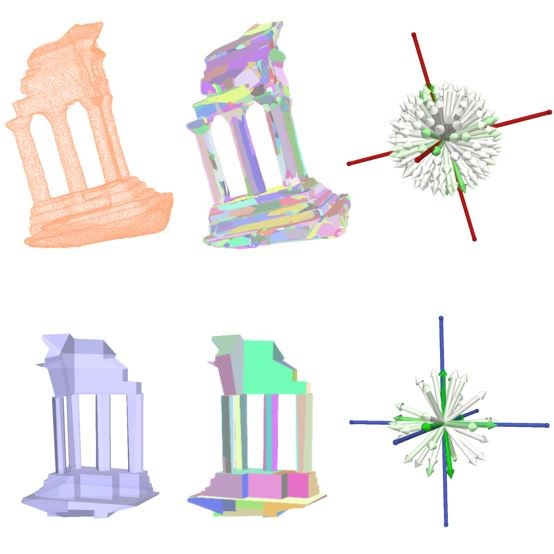
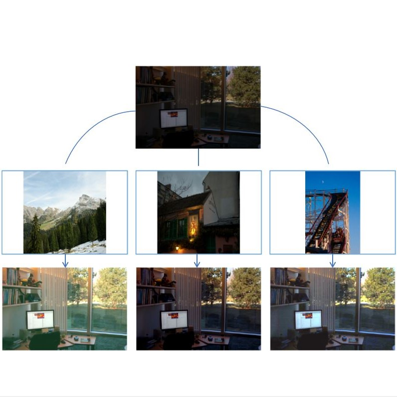
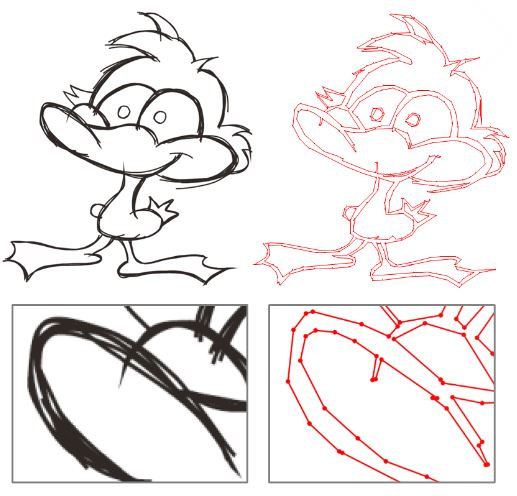
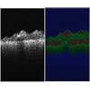

INRIA Sophia Antipolis
2004 Route des Lucioles
06902 Sophia Antipolis, France
E-mail: muxingzi.li (at) hotmail.com
Publications

Planar shape based registration for multi-modal geometry Muxingzi Li,
Florent Lafarge British Machine Vision Conference (BMVC), 2021
[pdf, bibtex]

Enhance images as you like with unpaired learning
Xiaopeng Sun*,
Muxingzi Li*☨,
Tianyu He,
Lubin Fan
(*equal contributions, ☨corresponding author) Proceedings of the 30th International Joint Conference on Artificial Intelligence (IJCAI), 2021
[pdf, bibtex]

Approximating shapes in images with low-complexity polygons Muxingzi Li,
Florent Lafarge,
Renaud Marlet IEEE/CVF Conference on Computer Vision and Pattern Recognition (CVPR), 2020
(Oral presentation)
[pdf, bibtex, code]
Robust joint image reconstruction from color and monochrome cameras Muxingzi Li*,
Peihan Tu*,
Wolfgang Heidrich
(*equal contributions) British Machine Vision Conference (BMVC), 2019
[pdf, supplementary materials, bibtex]

Statistical model for OCT image denoising Muxingzi Li,
Ramzi Idoughi,
Biswarup Choudhury,
Wolfgang Heidrich Biomedical Optics Express, 8 (9): 3903-3917, 2017
[pdf, bibtex, code]